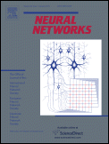

Brief Professional Background
DeLiang Wang received the B.S. degree in 1983 and the M.S. degree in 1986
from Peking (Beijing)
University, Beijing, China, and the Ph.D. degree in
1991 from the University of Southern
California, Los Angeles, CA, all in computer science.
From July 1986 to December 1987 he was with the Institute of Computing
Technology, Academia Sinica, Beijing. Since 1991, he has been with the
Department of Computer Science and Engineering and the Center for Cognitive
Science at The Ohio State University, Columbus, OH, where he is currently a Professor.
From October 1998 to September 1999, he was a visiting
scholar in the Department of Psychology at Harvard University, Cambridge, MA.
From October 2006 to June 2007, he was a visiting scholar at Oticon A/S, Copenhagen, Denmark.
From October 2014 to December 2014, he was a visiting scholar at Starkey Hearing Technologies, Eden Prairie, MN.
DeLiang Wang received the NSF Research Initiation Award in 1992 and the ONR
Young Investigator Award in 1996. He received the OSU College of
Engineering Lumley Research Award in 1996, 2000, 2005, and 2010.
His 2005 paper, "The time dimension for scene analysis",
received the 2007 Outstanding Paper Award from the IEEE Computational Intelligence Society.
His 2014 paper with Yuxuan Wang and Arun Narayanan,
"On training targets for supervised speech separation",
received the 2019 Best Paper Award from the IEEE Signal Processing Society.
The 2019 paper first authored by Ashutosh Pandey,
"A new framework for CNN-based speech enhancement in the time domain",
received the 2022 Young Author Best Paper Award (to Pandey) from the IEEE Signal Processing Society.
He received the 2008 Helmholtz Award and the 2019 Ada Lovelace Service Award from the International Neural Network Society.
In 2014, he was named a University Distinguished Scholar.
He was an IEEE Distinguished Lecturer (2010-2012), and is a Fellow of IEEE and
ISCA.

He is Co-Editor-In-Chief of Neural Networks, which is a
premier journal published by Elsevier.
In addition, he serves on the advisory board of
Cognitive Computation. He also served as President of the
International
Neural Network Society in 2006, and currently serves on its governing board.
(Research)
Teaching
(Office hours)
Research Interests
Biography
Publications
By Year
By Topic
Presentations
Useful Links
Home